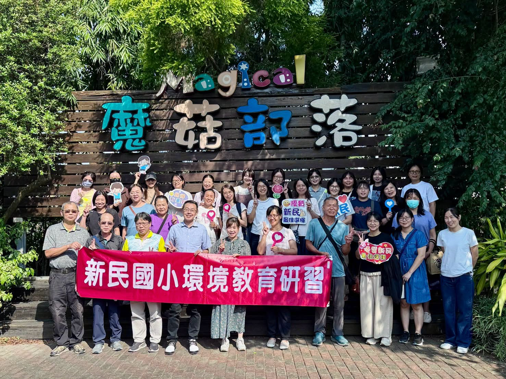
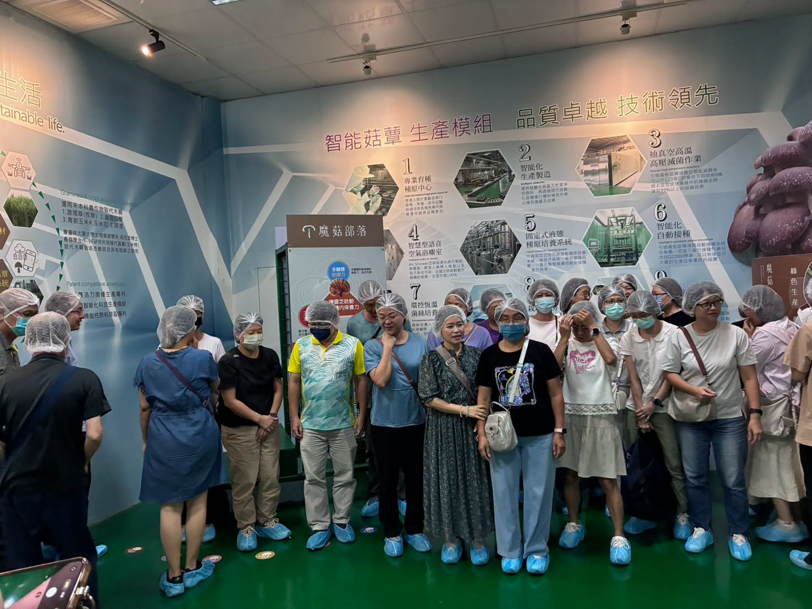

On the eve of Teachers' Day, Hsinmin used its Wednesday professional-development time to give the whole staff a special afternoon — one that combined environmental education, hands-on life experience, and some well-earned rest and recreation. The event was initiated by the principal and planned by the Office of Student Affairs together with our personnel director.
This time, we stepped outside our familiar campus and headed to the Magical Mushrooms Tribe (魔菇部落) for a very different kind of learning journey.
- 🍱Lunch together — refueling for the afternoon補充滿滿能量
- 🏭Mushroom factory tour — smart farming, and picking mushrooms by hand六星級科技茸菇生產廠區．親手採摘黑美人菇
- 🍳Cooking class & health talk — all about mushrooms蕈菇料理教學與蕈菇保健分享
- ☕Afternoon tea — hand-drip coffee and mushroom cookies手沖咖啡與黑美人菇餅
- 🚂Free time — cypress trees, a big meadow, and a little train落羽松、魔菇大草原、魔菇小火車
After refueling with a good meal, we put on hairnets and shoe covers and stepped into a six-star, high-tech mushroom production facility. There we learned about smart agriculture and how mushrooms are grown, and even picked fresh Black Beauty mushrooms (黑美人菇, a kind of black oyster mushroom) with our own hands. Following food from farm to table made environmental education more than knowledge in a textbook — it became something we could see and touch.

Next came a mushroom cooking class and a talk on how mushrooms keep us healthy — it turns out these little fungi hold a lot of big knowledge! 🍄 At afternoon tea, hand-drip coffee and Black Beauty mushroom cookies set the scene for easy conversation and an unhurried moment just for teachers.
To finish, everyone had free time to slow down: wandering among the bald cypress trees and across the mushroom meadow, or hopping aboard the cute little mushroom train — setting aside the busy weekday pace to simply enjoy time together.
Teaching has never been only the moment at the front of a classroom. It is the daily accumulation of learning, of walking alongside children, and of working shoulder to shoulder with colleagues. This afternoon broadened everyone's knowledge of the environment and everyday life — and gave our hardworking staff a chance to relax, connect, and recharge for the busy work of education.
💐 Thank you, Hsinmin team, for all your care and hard work.
May we keep learning and growing together — and keep collecting beautiful memories along the way.祝福全校教職員：教師節快樂！
辛苦了！也謝謝您們！
以學習充電，也為老師的幸福加油！
115學年度新民國小教師文康活動暨環境教育研習
在教師節前夕，學校特別利用週三進修時間，由校長發起、學務處與人事主任共同規劃，為全校教職員安排一場結合環境教育、生活體驗與文康休閒的午後時光！
這一次，我們走出熟悉的校園，來到魔菇園區，展開一場不一樣的學習旅程。
在補充滿滿能量後，我們進入六星級科技茸菇生產廠區，認識智慧農業與菇類生產的相關知識，並親手採摘新鮮的黑美人菇。從產地到餐桌，透過實際體驗，讓環境教育不只是課本上的知識，更成為看得見、摸得到的生活經驗。
接著還有精彩的蕈菇料理教學與蕈菇保健分享，原來小小的菇菇也蘊藏著大大的學問！午後茶時間，則準備了手沖咖啡與黑美人菇餅，讓大家一邊品味、一邊聊天，在輕鬆的氛圍中享受屬於教師們的悠閒時光。
最後的魔菇園區自由活動，更讓大家放慢腳步，漫遊落羽松、魔菇大草原，或搭乘可愛的魔菇小火車，暫時放下平日忙碌的腳步，享受同事相聚的歡樂時光
教學工作從來不只是站在講台上的那一刻，而是每天不斷學習、陪伴孩子、與夥伴並肩努力的累積。這場活動，不僅增進了大家的環境與生活知能，也讓平日辛勤工作的教職員們有機會放鬆心情、交流情感，為忙碌的教育工作補充滿滿的能量。
💐 感謝一直以來新民夥伴的用心與付出！
願我們在教育的路上，
一起學習、一起成長，也一起收藏更多美好的回憶。
祝福全校教職員：教師節快樂！
辛苦了！也謝謝您們！
Tap 🔊 to listen · 點喇叭聽發音
Our teachers saw how mushrooms grow in a high-tech factory.老師們看見了菇類如何在高科技工廠裡長大。
Food takes a long trip from the farm to our table.食物從農場到餐桌，走了好長一段路。
Everyone got to harvest fresh mushrooms by hand.每個人都親手採收了新鮮的菇。
The cooking class shared a new mushroom recipe.料理教學分享了一道新的菇菇食譜。
A cup of coffee helped everyone relax and chat.一杯咖啡，讓大家放鬆下來聊聊天。
Learning something new helps teachers recharge.學習新事物，讓老師們重新充電。
Match the word to its meaning
把英文和中文配對
Matched 配對成功：0 / 6